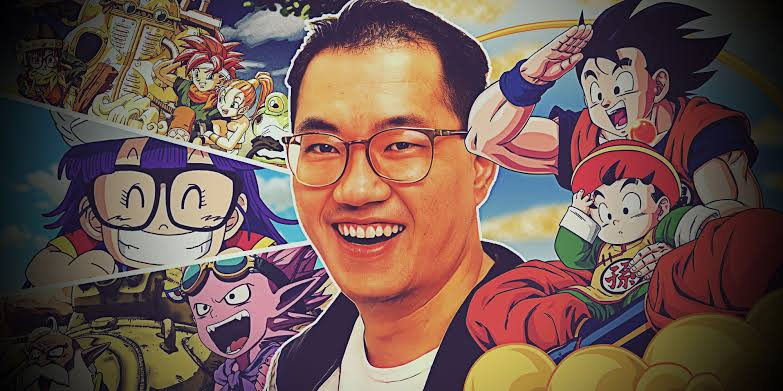
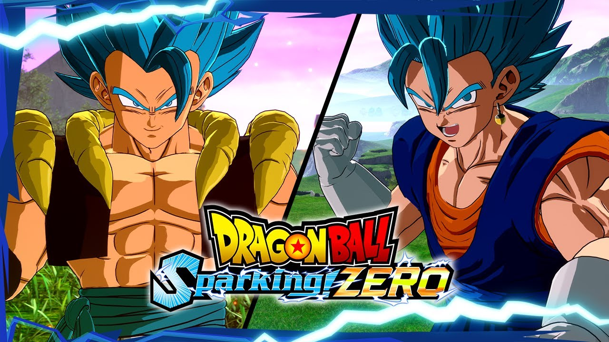

Evènements
Mort de l'auteur Akira Toriyama

Mort d'Akira Toriyama : de quoi est décédé le créateur de Dragon Ball ?
L'auteur de "Dragon Ball" et de "Dr Slump", Akira Toriyama,
est décédé à 68 ans, a annoncé sa maison d'édition vendredi 8 mars.
Les hommages se multiplient à travers la planète.
Concours disponible
Jeux concours
Dragon Ball Sparking Zero Tentez votre chance pour gagnez pleins de récompense
et être le sayajin le plus puissant de l'univers !!!!!!!